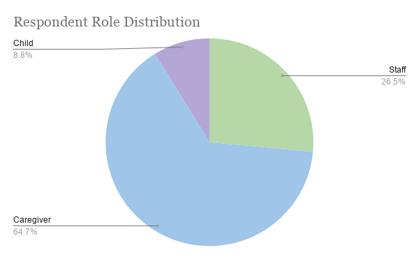
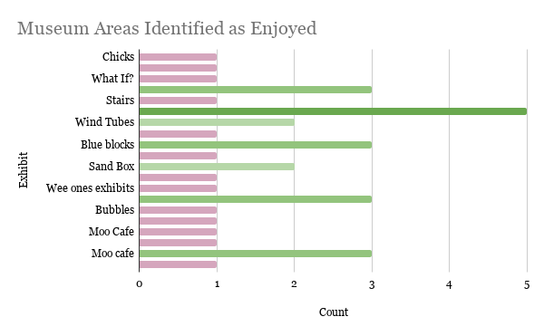
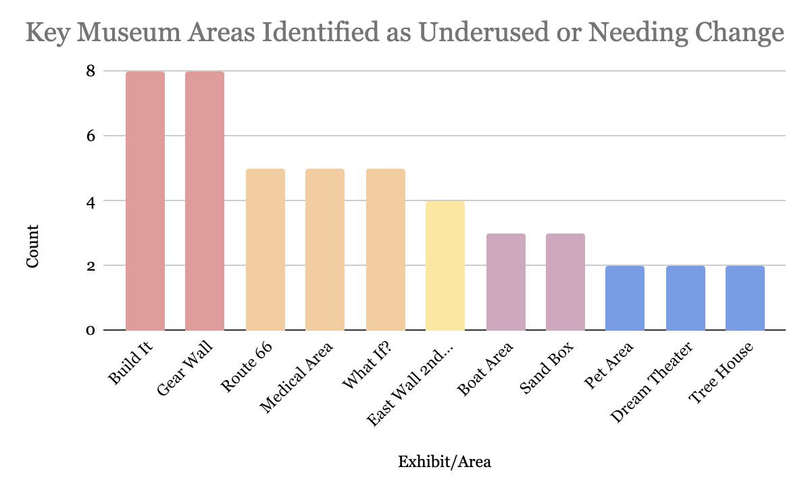

The Children’s Museum in Oak Lawn
Universal Design in Exhibits
Feba Elayadom
University of Illinois Chicago
Department of Occupational Therapy
Framework
Universal Design
Designing spaces so they can be used by as many people as possible without needing special adaptation.
In a museum, this means shaping exhibits so more children can enter, understand, and engage in play in meaningful ways.
General example
Curb cuts and automatic doors support a wider range of users without requiring a separate entrance.
Museum example
Exhibits with clearer entry points, multiple ways to engage, and better access can support more independent play.
Overview
The 7 Principles
Click below to view the seven principles that guided the review tool, along with brief play-related examples.
Takeaway
Understand how design impacts participation and how the museum can take action to improve it.
Tool
Review tool
This tool translates universal design into practical exhibit review questions focused on access, clarity, effort, communication, and use.
Findings
Patterns across reviewed exhibits
The review showed strong play opportunities, while recurring barriers appeared in access, clarity, and support.
- Open-ended materials supported creativity and flexible play.
- Many exhibits encouraged shared play.
- Trial-and-error and experimentation were well supported.
- Children often relied on caregivers to begin or continue play.
- Entry points into play were not always clear.
- Physical demands like reach and force impacted participation.
- Communication supports were sometimes limited.
Overall
Strong play opportunities were present, but so were consistent barriers in access, clarity, and support.
Recommendations
What action can look like
These recommendations move from lower-effort changes to longer-term planning opportunities.
Add visual entry points
Use icons, images, or example setups to show how play can begin without making it rigid.
Improve visibility and reach
Adjust placement of materials so they are easier to notice and access.
Reduce text-only communication
Support written directions with visual or sensory cues.
Use the tool for review
Support exhibit reflection and identify barriers more consistently.
Use findings in updates
Apply results to exhibit modifications and layout decisions.
Preserve flexible play
Keep open-ended engagement while improving access and clarity.
Integrate UD into future design
Use these questions earlier in exhibit planning and development.
Support funding and grants
Design and access goals can strengthen future funding conversations.
Expand multimodal supports
Consider additional sensory, audio, or preparatory supports over time.
Exhibit Selection
Visitor and staff input informed what was reviewed
Visitors and staff were surveyed to help identify exhibits that were enjoyed, underused, or viewed as needing change. This informed exhibit selection for review.



Exhibits selected for review
Impact
Why this matters for the museum
Stronger visitor experience
Children are more likely to initiate play, stay engaged longer, and participate more independently.
More intentional decisions
The tool gives the museum a practical way to reflect on exhibit usability and future changes.
Increased marketability
Taking visible steps toward universal design can strengthen how the museum communicates accessibility and inclusion.